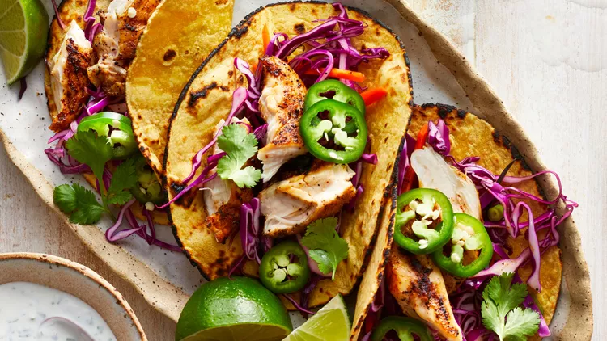

Grilled Chicken Tacos with Slaw & Lime Crema
Grilled Chicken Tacos with Slaw & Lime Crema

Description
Grilled chicken taco recipe that is healthy. Topped with grilled chicken tenders with a crunchy and color vegetable slaw.
Indregients
- 3 cups thinly sliced red cabbage
- 1 cup matchstick carrots
- 4 tablespoons fresh lime juice, divided
- 1 teaspoon salt, divided
- 1/3 cup reduced-fat sour cream
- 1/4 cup chopped fresh cilantro, plus more for garnish
- 8 chicken tenders
- 1 1/2 tablespoons olive oil
- 1 tablespoon chili powder
- 8 (8 inch) corn tortillas, warmed
- 1 jalapeño pepper, thinly sliced
- Lime wedges, for serving
Steps
-
Combine cabbage, carrots and scallions in a large bowl. Add 2 tablespoons lime juice and 1/2 teaspoon salt; toss to coat.
Combine sour cream, cilantro and the remaining 2 tablespoons lime juice in a small bowl.
-
Heat a grill pan over high heat. Brush chicken tenders evenly with oil; sprinkle with chili powder and the remaining 1/2
teaspoon salt. Coat the hot pan with cooking spray. Add the chicken to the pan; cook, turning occasionally, until an instant-read
thermometer inserted in the thickest part registers 165 degrees F, 7 to 8 minutes.
-
Divide the chicken among warm tortillas. Top with the cabbage slaw, the lime crema and jalapeño slices. Garnish with cilantro and
serve with lime wedges, if desired.